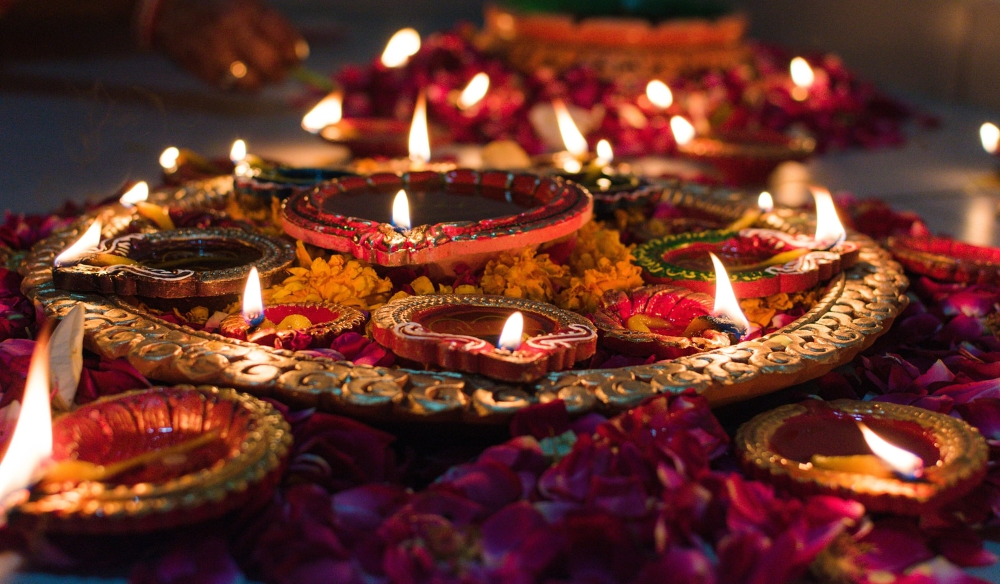
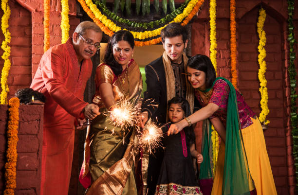
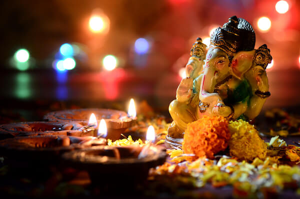

What is Diwali?
The joyous occasion of "Deepavali," The Festival of Lights, symbolises fresh starts, the victory of good over evil, and the triumph of light over darkness. The "Festival of Lights," also known as Deepawali or Diwali, falls on the same day as harvest and new year celebrations.
The Sanskrit word Deepavali, which signifies a row of lights, is where the phrase Diwali originates. Deep means "bright," while avali means "a row."
One of the most important festivals in India and South-East Asia, it is observed with the same love, joy, and dazzling splendour as Christmas in many regions of the world.
When is Diwali usually celebrated?
The celebration takes place between the middle of October and the middle of November on the darkest new moon night of the Hindu lunar month Kartika.
This year's deepavali is on 24th October 2022.


What is the significance of celebrating Diwali?
The Diwali festival represents the victory of light over darkness, knowledge over ignorance, good over evil, and right over wrong. It is a moment of great spiritual significance since it represents the shining of our own inner light and the sharing of it with others.
We open the physical space's light when we light a candle, an oil or a ghee lamp. Similar to this, when consecrated candles and lamps are lit on the auspicious festival of Deepavali, they enlighten the energetic road to Open the Light within us. Since it only comes around once a year, Deepavali has a special meaning and value for Light Seekers.
The celebration of lights serves as a reminder of the value of knowledge, the relevance of knowing oneself, and the importance of finding the right path. Deepavali celebrates the victory of our inner light over spiritual darkness, the triumph of wisdom over ignorance, and the triumph of good over evil.
On this day, the forces of Light supplant the forces of Darkness to disseminate love, joy, optimism, and zeal!